Știri și evenimente
Evenimente
Urmează
Niciun eveniment anunțat
Următoarele evenimente vor fi anunțate aici. Până atunci, vă așteptăm la muzeu în programul de vizitare.
În desfășurare
Niciun eveniment acum
În acest moment nu are loc niciun eveniment. Expozițiile permanente ale muzeului pot fi vizitate oricând în program.
Realizate
30 de evenimente, din 2015 până azi
2020
2019
- Moș Crăciun la Muzeul Ianca
-
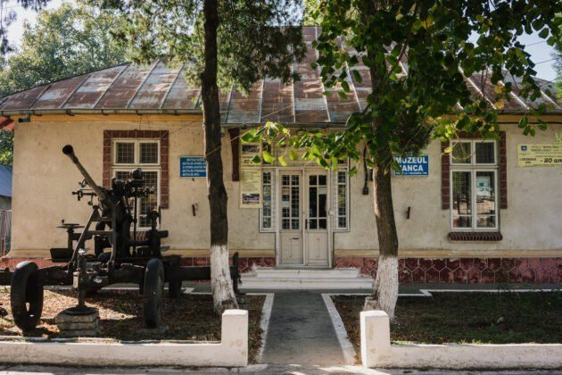
Muzeul Ianca la ceas aniversar -
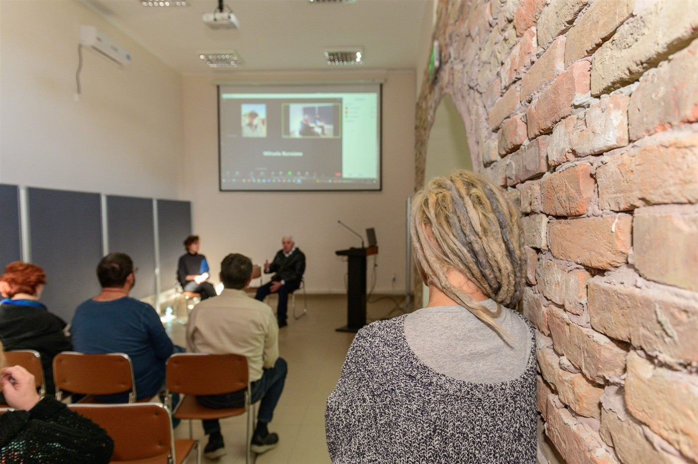
Lansare de carte la Muzeul Ianca -
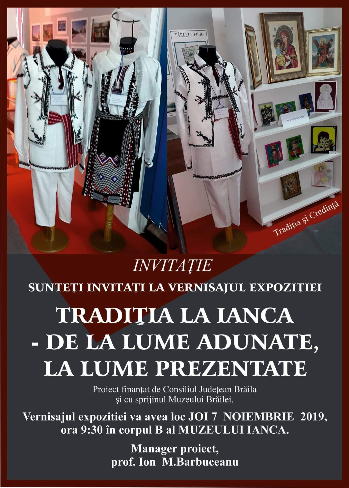
„Muzeul Ianca – promotor al tradiției locale” -
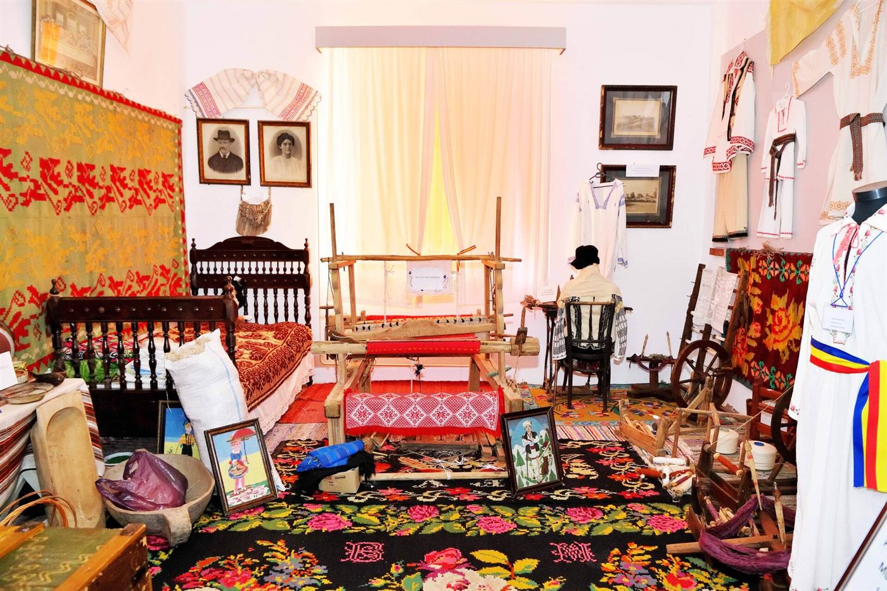
ÎPS Casian în vizită la Muzeul Ianca -
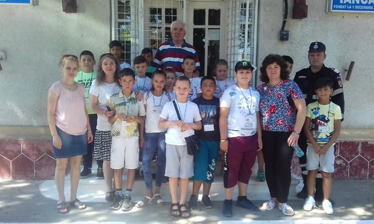
Școala de vară: „Tradiția la Ianca – lucruri vechi la vremuri noi” -
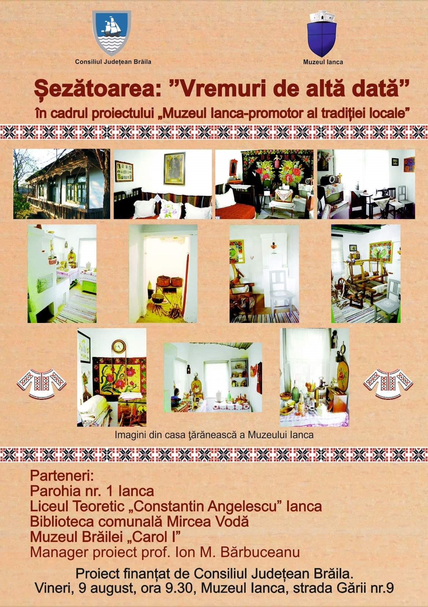
„Vremuri de altădată” la aniversarea a 20 de ani a muzeului -
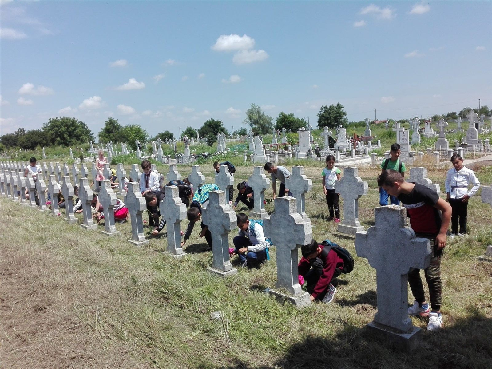
Ziua Eroilor alături de Muzeul Ianca - Noaptea Muzeelor la Muzeul Ianca
-
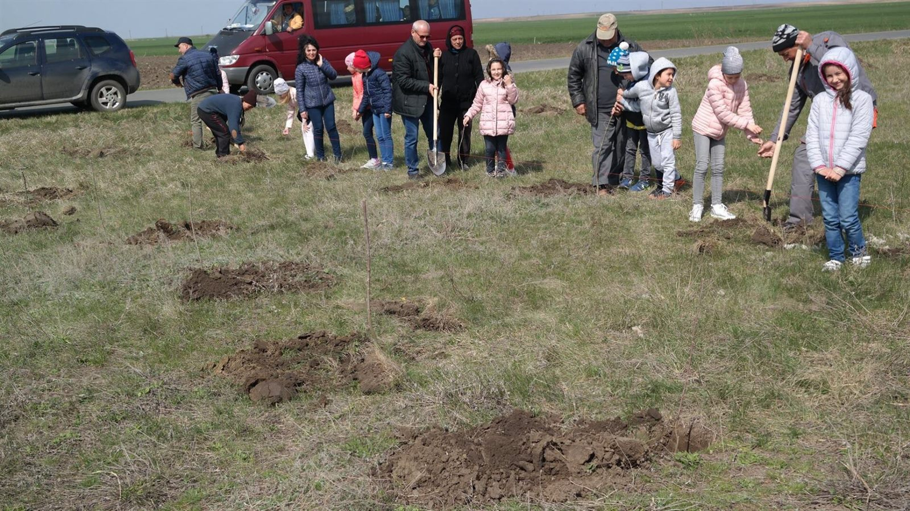
Stejari pentru eroi - Mica Unire, marcată la Muzeul Ianca
2018
- Datini, tradiții și obiceiuri de Crăciun
-
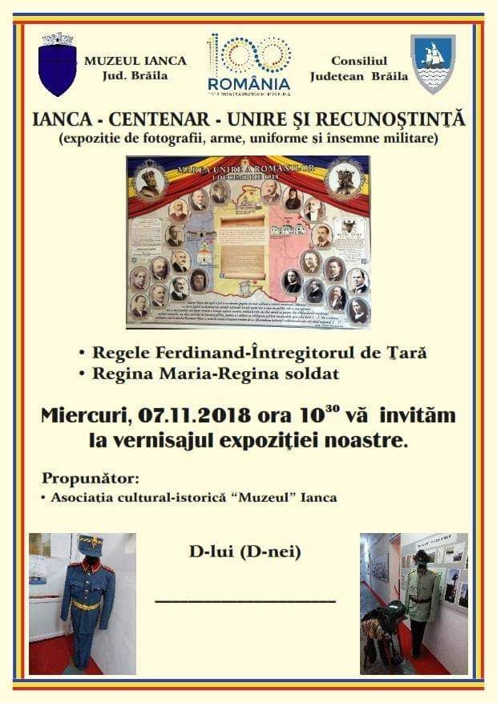
Proiectul „Ianca – Centenar – Unire și Recunoștință” -
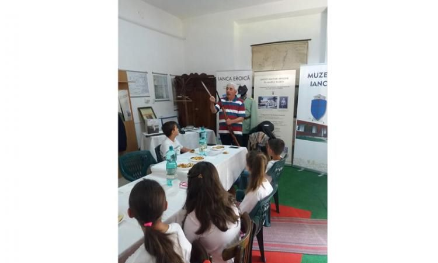
Școala de vară: „De la micii sanitari la Regina Maria – mama răniților” - Noaptea Europeană a Muzeelor la Ianca
-
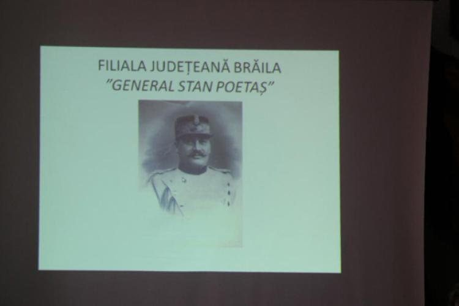
Lecție despre eroul brăilean Stan Poetaș, din Primul Război Mondial -
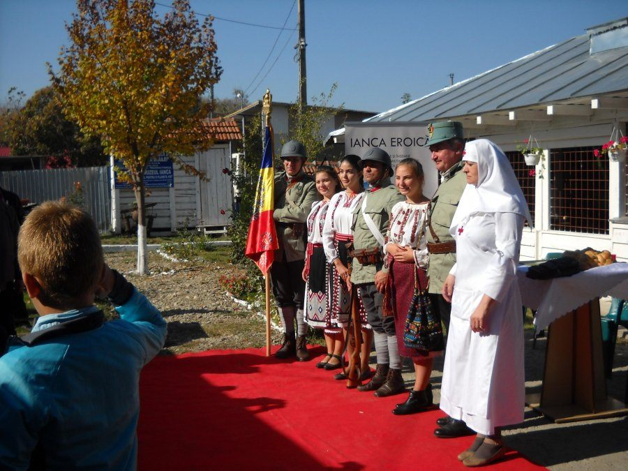
Omagierea Unirii lui Cuza: de la Mica la Marea Unire